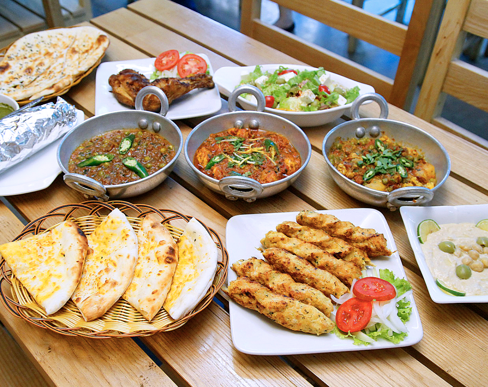
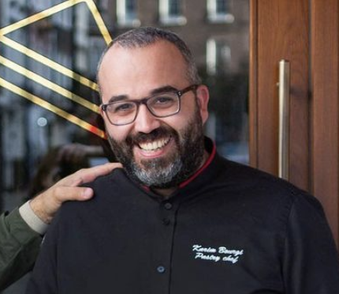
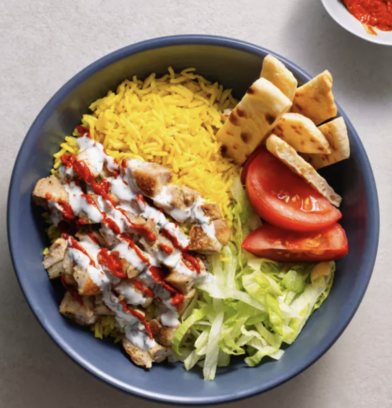
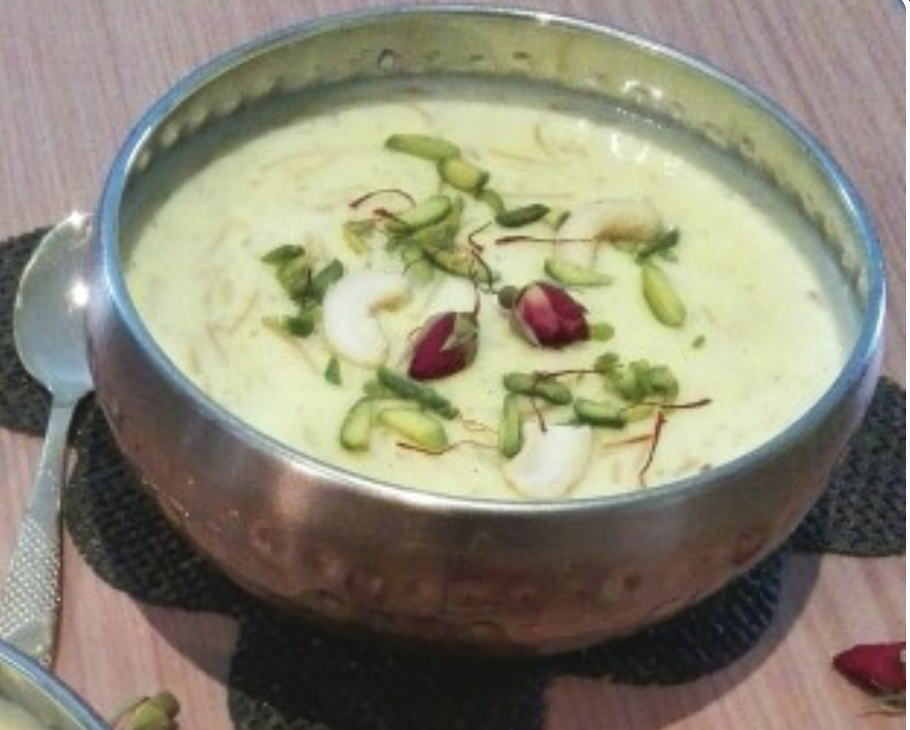
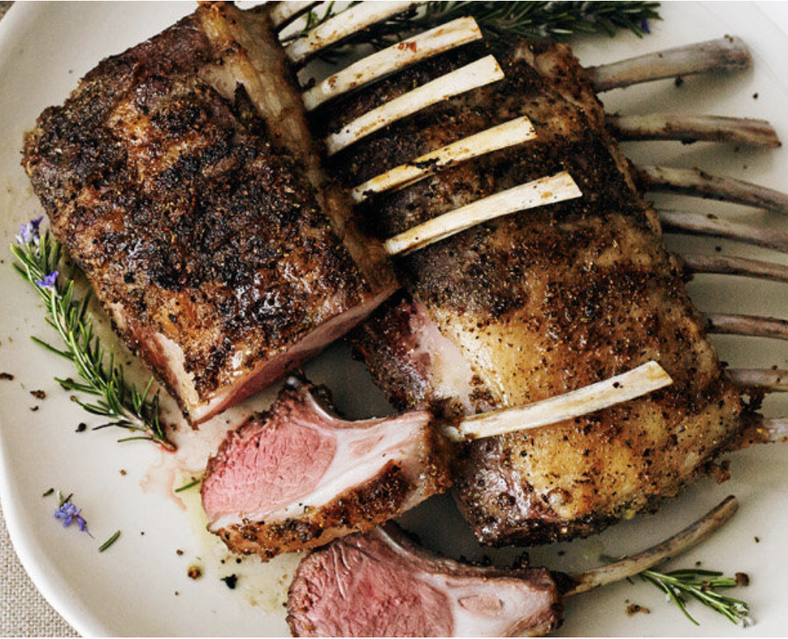
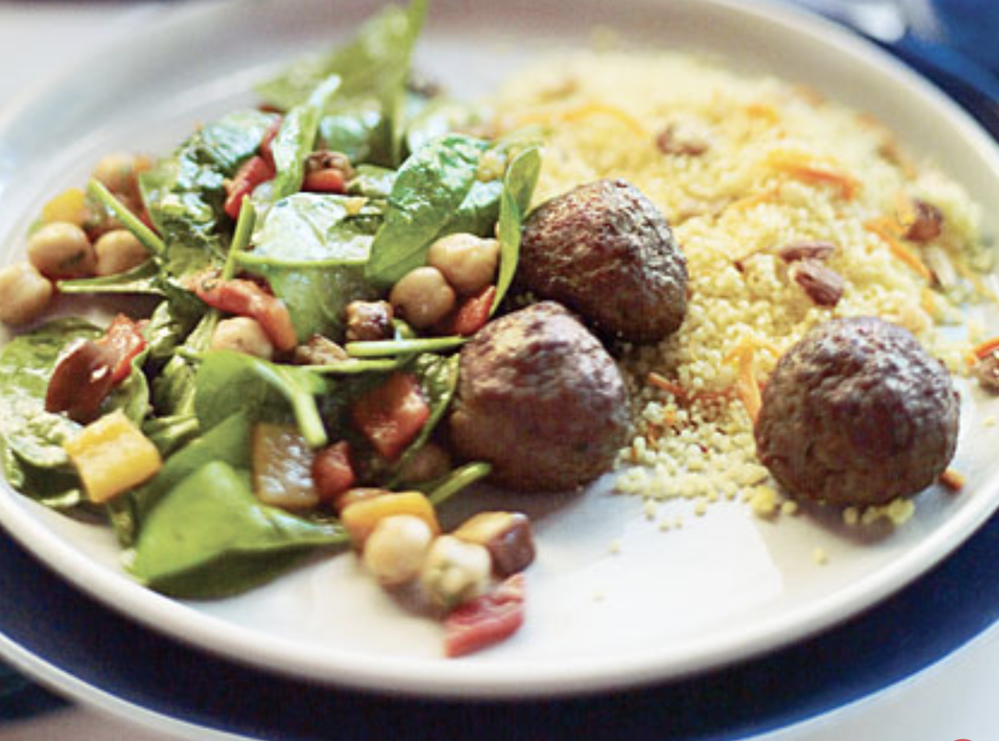

Halal

Halal refers to the dietary laws and guidelines followed by Muslims, encompassing permissible food and beverages according to Islamic principles. In adherence to Halal, certain foods, including meat and poultry, must be prepared and consumed in specific ways, ensuring they meet the ethical and religious standards outlined in the Quran. Halal certification guarantees that products comply with these regulations, providing assurance to consumers seeking products that align with their religious beliefs. Beyond food, the concept of Halal extends to various aspects of daily life, promoting ethical practices and mindfulness in accordance with Islamic teachings.

Nusret Gokce's is a famous Turkish salt-throwing celebrity BBQ Chef.

Chicken and Rice
Kheer
Grilled Lamb
Meatballs